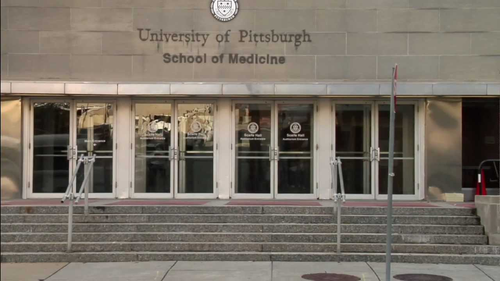

Pittsburgh Academy of Medicine
Mahi Shah
Conjecture
This archive documents the findings of the Pittsburgh Academy of Medicine from about 1878 to 1972. It is important to note that during this time, people began to see illness as a result of poor social and environmental conditions, so medicine started to become more prioritized. It was a slow advance since studying the human body was difficult, but people were becoming more open to the idea of using it. Some important documents include legal and administrative files, membership records, meeting notices, library records, and publications. There are also some key events in Pittsburgh history that were captured here, including the founding of the academy in 1889 for “the promotion of the science and art of medicine.” This was the result of physicians in Pittsburgh feeling unsatisfied with the atmosphere and depth of the science inquiry. However, there is some factual uncertainty in some areas of this archive. There are meetings that date to the early 1970s, but the exact date of the academy’s dissolution remains unknown. This lack of clarity leaves questions about how the organization ended and whether it gradually faded away or formally closed. Overall, the factual stasis shows that the archive provides a strong record of the Pittsburgh Academy of Medicine’s activities, but it is not complete.

Pittsburgh Medical School
Definition
This archive can be categorized as an institutional or organizational archive of a professional medical society. Its purpose is to shed light on Pittsburgh’s medical community, medical practices, and medical education. Researchers can trace the changes in medical research practices by looking through meeting programs and scientific papers. The archive also operates as a civic and local historical collection which reveals how the medical community is linked with other regional developments. For example, the academy’s library records reflect the growth of public and university medical libraries and the competition among institutions for prestige and authority. This archive can also be seen to have scientific and social functions. Even though it was meant to emphasize the advancement of medical science, the archive also contains information that depict the organization's social and recreational activities. Plays, caricatures, and banquet programs portray physicians as members of the community, not just professionals. This can complicate the definition of the archive since it not only has medical knowledge, but also records of identity, community, and a cross between professional and social standings.
Quality
One of this archive’s main strengths is its variety. The collection spans over a century and includes many different types of materials such as meetings, reports, and social publications. This wide range of resources allows researchers to study the academy from multiple angles and not merely from a medical perspective. The long time span of the archive makes it possible to track how the academy has changed over time as medicine and society evolved from the nineteenth to twentieth century. Because the records span almost a century, one missing paper can trace changes over time and cause medical discourse. This can significantly alter the way these papers are interpreted and missing information can change future research. Another strength is that it includes both personal and professional aspects of the medical community. The scientific papers and reports show how the physicians were keeping up with medical research and their jobs, and the caricatures and plays reveal how they interacted outside of work. The collection's limitations are equally as important as its strengths. Like most archives, this one reflects only what the researchers chose to keep. They wanted to shed the organization in a positive light so there is a vast amount of information that was not included. Internal disagreements or mistakes may have been kept out to keep this positive image.
Policy
First, the researchers should work together to make the archive more accessible and complete. While this archive provides valuable information, more of it could be digitized so people outside the university can view the contents online. There are some gaps in the data , so filling in these gaps with related materials such as letters, newspapers, and photographs can give the readers a more clear idea of what they are reading. This would also give a fuller picture of the academy’s history by including people who aren’t well represented in the archive. Second, researchers should analyze this archive critically instead of accepting everything it shows. Scholars often highlight the success of articles while leaving out failure. It is important to acknowledge conflict because it helps form a more balanced understanding of how the academy operated and why it declined. They can do this by comparing the academy’s records with other sources such as university or hospital archives. Third, there should be an effort to share the archive’s story with a wider audience. The general public would not explore this archive unless they visited the website, but sharing it in museum exhibits or online timelines can show how the academy influenced medicine in Pittsburgh. Making the archive more accessible to the public also encourages people to think about how professional organizations evolved over time. Lastly, adding footnotes or annotations to the documents would improve this archive as well. Since these papers were published decades ago, the medical terminology used may be outdated and difficult to understand. Providing more modern language would help the reader understand the archive better. Additionally, adding oral records of interviews or spoken research could provide a different tone and perspective to the archive.

generated by Pitt Fuego
Why make a spark when you can light a fire?
.jpeg)